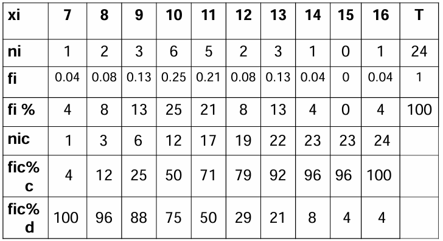
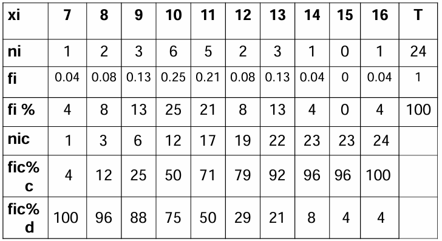
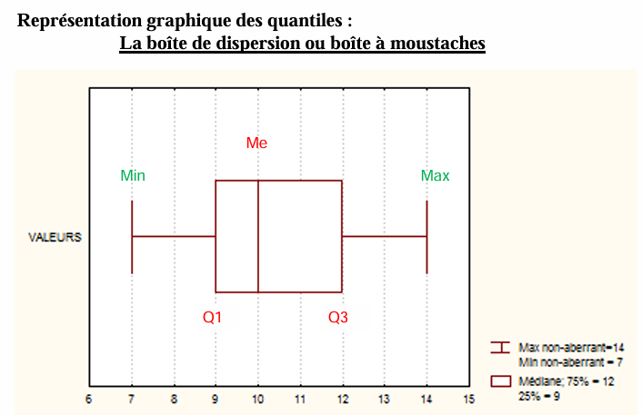
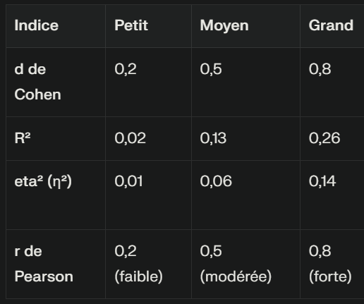

Permet de décrire les données recueillies.
Population : C'est l'ensemble de référence. C'est également l'ensemble concerné par les conclusions que l'on souhaite tirer des observations. Le plus souvent, le psychologue n'a pas accès à l'ensemble de la population qu'il étudie.
Échantillon : C'est un sous-ensemble de la population, sur lequel sont faites les observations.
Variable : C'est un aspect particulier de l'individu auquel on s'intéresse (ex. : âge, métier, performance à un test verbal).
Modalités ou valeurs : Ce sont les différents "états" associés à une variable (ex. : sexe → masculin/féminin).
Les modalités sont des noms sans ordre ni calcul possible (ex. : couleur des yeux).
Les modalités sont ordonnables (ex. : tailles S/M/L, opinions graduées).
Valeurs isolées (ex. : nombre d'enfants, nombre de mots).
Valeurs quelconques dans un intervalle (ex. : taille, vitesse).
📊 Télécharger le fichier Jamovi (.omv)
Somme des valeurs divisée par le nombre d'observations.
 

Modalité la plus fréquente (ex. : 10 avec 6 réponses soit 25%).
Modalité centrale dans une série ordonnée. Formule : (Effectif total + 1)/2 → 13ème réponse = 11.
Indicateur de dispersion exprimé dans l’unité de la variable (ex. : années).
Découpe en tranches égales : quartiles, déciles, centiles.
La p-value indique la probabilité de rejeter H0. Elle est sensible à la taille d’échantillon.
La taille d’effet mesure la force d’un effet observé (d de Cohen, R de Pearson, η², R²).
Choix selon la normalité des données (Skewness, Kurtosis, graphique). Tests paramétriques recommandés si possible.
Évalue la capacité d’un test à détecter un effet réel. Évite les faux négatifs et les biais de publication.
Logiciel pour calculer la puissance statistique d’un test.